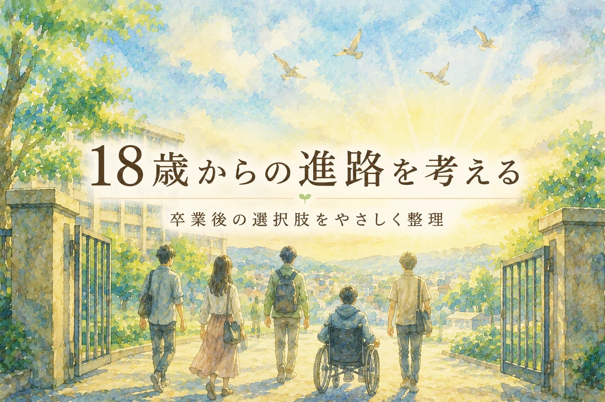

📖 知っておくと読みやすくなる言葉
- 就労移行支援（しゅうろういこうしえん）
- → 障害のある人が一般企業への就職を目指して訓練・サポートを受けるサービス
- 生活介護（せいかつかいご）
- → 日常生活のサポートや創作活動など、障害者施設で日中を過ごすサービス
- グループホーム
- → 障害のある人が少人数で暮らす、地域の住宅（サポートスタッフがいる）
- 就労継続支援（しゅうろうけいぞくしえん）
- → 一般企業での就労が難しい人が、福祉的就労として働くサービス（A型・B型がある）
「卒業後のことは、まだ先の話」と思っていませんか？
特別支援学校や特別支援学級に通う子どもを持つ保護者の多くが、就学後しばらくは毎日の学校生活や療育で手いっぱいです。でも、18歳での卒業に向けた準備は、実は在学中から始まっていると言っても過言ではありません。
この記事では、特別支援学校高等部を卒業した後にどんな進路があるのかを整理し、「今からできること」をお伝えします。
卒業後の進路、4つのルート
文部科学省の調査（2023年3月卒業生・特別支援学校高等部、約2万1千人）によれば、卒業後の進路はおおよそ次の4つに分かれます。なお、数値は概算であり、年度・集計方法によって若干異なります。
| 進路 | 割合（概算） |
|---|---|
| 一般企業等への就職 | 約29% |
| 障害福祉サービス（就労系） | 約34% |
| 障害福祉サービス（生活介護等） | 約28% |
| 進学・その他 | 約9% |
※文部科学省「学校基本調査（令和5年度）」をもとにした概算です。分類方法や年度によって数値は変わります。
※「進学・その他（約9%）」には専門学校・大学等への進学も含まれます。知的障害がない・比較的軽い発達障害のあるお子さんで、一般進学を選ぶケースもあります。
「就職」と一口に言っても、すぐに一般就労をめざすルートから、福祉サービスを使いながら少しずつ力をつけていくルートまで、さまざまな選択肢があります。
主な進路先をひとつずつ知ろう
就労移行支援――「一般就労を目指して、2年間トレーニングする場所」
企業への就職を希望する人が、仕事に必要なスキル（コミュニケーション・ビジネスマナー・パソコン操作など）を訓練するサービスです。
- 期間：原則2年間（状況により最大1年間の延長申請が可能）
- 雇用契約：なし（訓練期間のため工賃支払いなし）
- 目標：一般就労への移行
高校在学中から見学・体験ができる事業所も多く、「どんな仕事が自分に向いているか」を探るきっかけになります。
就労継続支援A型――「雇用契約を結んで働く、福祉的就労」
一般企業への就労が現時点では難しいが、雇用契約に基づいて働ける人を対象としたサービスです。
- 雇用契約：あり（最低賃金が保障される）
- 事業所によって安定性に差があります。見学時に支援内容・定着率も確認することをおすすめします（WAM NETで事業所情報を調べることもできます）
- 内容：清掃・農業・カフェ運営・パソコン作業など事業所によってさまざま
- 働きながら収入を得つつ、一般就労への移行を目指す人も多い
就労継続支援B型――「雇用契約なし、自分のペースで社会参加できる場所」
雇用契約を結ぶことが難しい人を対象としたサービスです。
- 雇用契約：なし（工賃として支払われる。全国平均は月24,141円・令和6年度実績、厚生労働省）
- 工賃だけで生活することは難しいため、障害年金や家族のサポートと組み合わせるのが一般的
- 内容：軽作業・農作業・手工芸・パン作りなど
- 目的：就労よりも「社会参加」「生活リズムの維持」に重きを置くケースが多い
「毎日通える場所がある」「人と関わる機会がある」という安心感が、本人の生活の基盤になっています。
生活介護――「日中の生活を支える介護サービス」
常時介護を必要とする方を対象に、食事・入浴・排泄などの介護と、創作・生産活動の機会を提供するサービスです。
- 対象：障害支援区分3以上（50歳未満）、障害支援区分2以上（50歳以上）など
- 内容：日中の介護・リハビリ・創作活動
- 「就労」を目的とするサービスではなく、安心して日中を過ごせる場所
グループホーム（共同生活援助）――「地域で暮らす住まいの場」
2〜10人程度の少人数で共同生活を送る住居です。夜間を中心に、食事・入浴・排泄等の介護と日常生活の相談・助言を受けられます。
- 日中は別のサービス（就労継続支援・生活介護など）を利用するのが一般的
- 「家族から自立して地域で暮らす」という選択肢のひとつ
- 待機者が多い地域もあるため、早めの情報収集が重要
なぜ「在学中から」知ることが大切なのか
高校卒業直前に「さあ進路を決めましょう」となっても、サービスの見学・体験・申請には時間がかかります。グループホームには待機者がいることもあります。
さらに、学校と卒業後の支援機関をつなぐための「個別の移行支援計画」という仕組みがあります。高等部の3年生頃から、学校・保護者・受け入れ先・相談支援専門員が集まって「移行支援会議」を開き、これまでの支援内容と今後の支援方針を引き継ぎます。
この会議に卒業後の支援機関が参加するためには、事前に見学・体験をして「この子を知っている」関係を作っておくことが大切です。
18歳以降の生活を支えるお金の話
18歳以降の生活を考えるとき、「障害年金」の存在も知っておいてください。
障害基礎年金は、一定の条件を満たした方が受給できる年金です。幼少期から障害のある方は、20歳のときから申請できる場合があります。受給には障害の程度の認定と請求手続きが必要で、すべての方が自動的に受け取れるわけではありません。
- 1級：年額1,059,125円（月額88,260円相当・令和8年度）
- 2級：年額847,300円（月額70,608円相当・令和8年度）
※上記は昭和31年4月2日以後生まれの方の障害基礎年金額です。子の加算や生年月日、障害厚生年金の有無により金額は変わります。年度ごとに改定されるため、最新の金額は日本年金機構の公式サイトでご確認ください。
就労継続支援B型の工賃（月24,141円・令和6年度全国平均）と障害年金などを組み合わせながら、生活の基盤を考えていきます。詳しくは最寄りの年金事務所か市区町村の窓口にご相談ください。
在学中からできること
| 時期 | やっておくこと |
|---|---|
| 中学生のうちに | 進路先の種類を保護者として把握しておく |
| 高等部1〜2年 | 就労移行支援・B型などの見学・体験に参加する |
| 高等部3年 | 移行支援会議に積極的に参加する。計画相談支援を開始する |
| 卒業後 | サービス利用開始。相談支援専門員と定期的に面談する |
相談できる窓口
相談支援専門員（障害者総合支援法に基づく）
障害福祉サービスを利用する際に必要な「サービス等利用計画」を作る専門職です。本人・家族と面談しながら、どのサービスを組み合わせるかをコーディネートしてくれます。
→ 市区町村の「障害福祉課」に相談すると、地域の相談支援事業所を紹介してもらえます。
発達障害者支援センター（都道府県設置）
発達障害に特化した相談機関です。在学中でも利用できます。就労・生活・家族関係など幅広い相談が可能です。
「どこで生きるか」を一緒に考える
18歳以降の進路は、「どこで働くか」だけでなく「どこで・誰と・どう生きるか」という問いでもあります。
本人にとっての「豊かな暮らし」は何か。働くことが大切な人もいれば、安心して通える居場所があることが大切な人もいます。言葉でうまく伝えられないお子さんの場合は、毎日の小さな反応や表情からその子の「好き」「安心」を積み上げていくことが、将来の選択肢を考える手がかりになります。
早いうちから選択肢を知り、本人の声を聞きながら、一緒に「その子らしい18歳以降」を描いていきましょう。
通級・特別支援学級・放課後等デイサービスなどの利用可能性・内容は、お住まいの市区町村によって異なります。まずは地域の窓口（障害福祉課・特別支援教育担当）に確認することをおすすめします。
📌 この記事を使うヒント
子どもが中学2〜3年生になったとき、この記事を一緒に読んで「どんな進路があるか」を話し合う材料にしてください。就労支援員や進路担当との面談前の予習にも使えます。
まなびの森教育研究所では、家庭でできる発達支援の実践ツールを提供しています。
進路を考えながら「家庭でできることは何か」を整理したい方にも参考になる内容です。